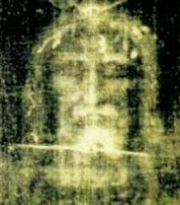
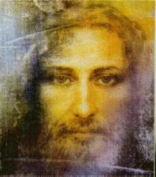

Ao longo dos séculos, JESUS se manifestou
em diversas oportunidades, confirmando que o Sudário de
Turim, é o mesmo tecido que envolveu o seu Corpo no sepulcro em Jerusalém.
Como acreditamos na revelação Divina, cremos que estas palavras são do
SENHOR. E asim, com um profundo espírito de observação e respeito, podemos
admirar as impressões no Lençol Mortuário, que mostram de maneira impressionante,
a grandeza da flagelação sofrida por JESUS, em tal intensidade, que deformou
cruelmente a Divina Face do SENHOR, fazendo com que a Síndone seja um retrato
fiel das covardias e abominaveis barbaridades que o FILHO DE DEUS enfrentou
e resistiu com heroica coragem e invulgar submissão, a fim de que aquele terrível
e brutal acontecimento, revelasse também a grandeza de um Amor imenso e sem
limites por todos nós, que fomos lavados e purificados em seu Sagrado Sangue,
que Redimiu e Salvou a humanidade de todas as gerações. Vejam o Rosto de JESUS!
Ao contemplarmos a sua Divina Face, apesar de todas as maldades e atrocidades,
é fácil vislumbrarmos a imponência e dignidade de um soberano. Esta Sagrada
Face continuamente atrai multidões de fieis que querem permanecer a seu lado,
venerando e retribuindo o Divino Amor, agradecidas pela incomensurável
Obra do FILHO DE DEUS.
confirmando que o Sudário de
Turim, é o mesmo tecido que envolveu o seu Corpo no sepulcro em Jerusalém.
Como acreditamos na revelação Divina, cremos que estas palavras são do
SENHOR. E asim, com um profundo espírito de observação e respeito, podemos
admirar as impressões no Lençol Mortuário, que mostram de maneira impressionante,
a grandeza da flagelação sofrida por JESUS, em tal intensidade, que deformou
cruelmente a Divina Face do SENHOR, fazendo com que a Síndone seja um retrato
fiel das covardias e abominaveis barbaridades que o FILHO DE DEUS enfrentou
e resistiu com heroica coragem e invulgar submissão, a fim de que aquele terrível
e brutal acontecimento, revelasse também a grandeza de um Amor imenso e sem
limites por todos nós, que fomos lavados e purificados em seu Sagrado Sangue,
que Redimiu e Salvou a humanidade de todas as gerações. Vejam o Rosto de JESUS!
Ao contemplarmos a sua Divina Face, apesar de todas as maldades e atrocidades,
é fácil vislumbrarmos a imponência e dignidade de um soberano. Esta Sagrada
Face continuamente atrai multidões de fieis que querem permanecer a seu lado,
venerando e retribuindo o Divino Amor, agradecidas pela incomensurável
Obra do FILHO DE DEUS.
JESUS falou a Irmã Maria Pierina, na Itália: “Por Minha Sagrada Face alcançará a salvação de muitas almas! Reze e peça. Nada lhe será negado!â€
NOSSO SENHOR disse a Irmã Maria Pierina: “Cada vez que um fiel contemplar a Minha Face, derramarei sobre ele mais graças e amor.â€
JESUS falou a Santa Gertrudes: “Os devotos da Sagrada Face receberão pela contemplação de Minha Natureza Humana, graças e discernimento para saberem se colocar diante dos mistérios da vida.â€
NOSSO SENHOR disse a Irmã Maria de São Pedro de Tours: “Do mesmo modo que através das Orações e Penitências, você e também a todos que procuram reparar a Minha Face desfigurada pelos pecadores, derramarei graças cuidando da alma de cada um, tornando-a tão bela como naquele dia em que saiu da Pia Batismal, quando recebeu o Sacramento do Batismo.â€
NOSSO SENHOR falou a Irmã Maria de São Pedro de Tours: “Minha Face é como um Selo Divino que tem o poder de imprimir nas almas que, a ela se dedicam, a imagem do DEUS Vivo. EU concederei a essas almas uma contrição tão perfeita, que mesmo os seus pecados mais graves, serão lavados e transformados diante de MIM, tornando-se brancos e puros como a neve.â€
ORAÇÃO:
“SENHOR, MOSTRAI-NOS A VOSSA FACE E SEREMOS SALVOS.â€
 Ó Bom JESUS, que quer salvar o mundo de hoje com o mesmo infinito
amor com que o criastes e redimistes, inclui-me entre aqueles que trabalham pelo
triunfo do Vosso Amor na Terra. Receba o meu ser! Disponha de mim! Quero
difundir a imagem de Vossa Divina Face, para que em todas as almas ela substitua
o vulto do ódio, do egoísmo e da sexualidade, que habita nos corações.
Ó Bom JESUS, que quer salvar o mundo de hoje com o mesmo infinito
amor com que o criastes e redimistes, inclui-me entre aqueles que trabalham pelo
triunfo do Vosso Amor na Terra. Receba o meu ser! Disponha de mim! Quero
difundir a imagem de Vossa Divina Face, para que em todas as almas ela substitua
o vulto do ódio, do egoísmo e da sexualidade, que habita nos corações.
Em Vosso Amor misericordioso e onipotente convertei as pessoas, os dirigentes, os políticos e as nações, afastai os males do ateísmo que destrói a unidade e com a poderosa força do Divino ESPÍRITO SANTO, renove a face da Terra. Que todos nós redimidos pelo Vosso Sagrado Sangue e unidos filialmente a sempre Virgem Maria, MÃE DE DEUS e nossa MÃE, caminhemos na tranquilidade da ordem, na felicidade do amor, na harmonia da família e na paz do mundo, rumo a vida eterna. Amém.
“JESUS CRISTO SACERDOTE ETERNO, FAZ RESPLANDECER A TUA FACE SOBRE NÓS E PERMANEÇA CONOSCO. AMÉMâ€

